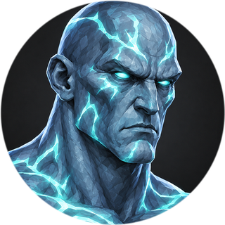
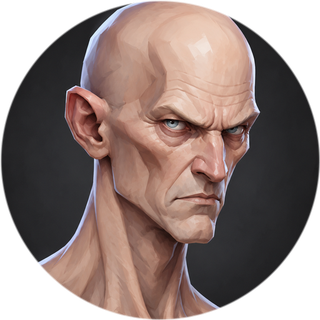

Lore
An arena where worlds meet
Where four worlds meet — the red canyons, the sacred groves, the castles under a blood moon and the dead necropolises — stands the Arena. No one remembers who built it. Its stones are older than any of the peoples, and its gates open by themselves when the time to fight comes.
The peoples learned long ago that wars ruin everyone, while the Arena settles a quarrel fast. Here the clans divide their lands, chieftains prove their right to lead, and common fighters win the glory sung by the fires afterwards. There are no healers here, no inherited armor, no bought strength. Everyone steps onto the sand as years of training made them. Only the fight decides.
“The Arena does not ask who your father was. It asks whether you are still standing when the round ends.”
Who the Arenarch is
“Arenarch” means “ruler of the arena”. That is the title of the fighter who wins the most in a season. Their statue stands in the middle of the Gear Hall, where fighters gather before they step out. While the statue stands, all four worlds know the Arenarch's name. When the season ends, a new one climbs the pedestal.
The peoples of the Arena

Orcs
Red-skinned giants of the red canyons. To an orc the Arena is sacred: here you rise in rank, settle the feuds of the clans and win glory. Orcs are strong and stubborn and never retreat. Their warriors lead whole squads into battle, and their shamans call the storm down from the canyon skies.

Elves
Lean, swift wardens of the sacred groves. They hear the spirits of the forest and draw power from the turquoise crystals growing in the rocks. An elf strikes from afar and never lets the enemy close in: the predator sees the Arena as just another hunting ground, and the mage bends fire, water and earth to his will.

Vampires
Pale nobility of gothic castles under a blood moon. Eternity taught them patience: they wait for the enemy to make a mistake, then take his blood and strength. Assassins come from the shadows, blood lords under the full moon.

The Risen
Lords of ancient necropolises, risen from their graves. Death is only a beginning for them: they command souls, decay and curses. The Risen come to the Arena for new servants, and everyone who falls here may rise again one day.
Two more peoples enter the Arena with the game's release.

Titans at release
Giants whose bodies are covered with glowing souls imprisoned inside. The Titans are the judges and jailers of the Arena: they bind, lock away and set souls free when it suits them.

Humans at release
The youngest race of the Arena. Humans have neither the eternity of vampires nor the strength of orcs — but they have ingenuity: machines, explosives and alchemy that change the rules of the fight.
Twelve paths
Warrior
A master of close combat. He charges into the thick of the fight and holds it. The Executioner cleaves with a greataxe, the Raider marches with spear and shield like the old phalanxes of the canyons, the Bonebreaker hides behind his shield and covers his own.
Shaman
Lord of the storm. The Seer strikes with chain lightning and plants totems, the Berserker rushes in with two axes in the rage of the ancestors, the Keeper holds the line with hammer and shield.
Predator
A hunter to whom the Arena is just another hunting ground. He keeps his prey at range with a hidden net and rolls. The Marksman strikes with a heavy bolt, the Tracker showers arrows on the run, the Warden closes in with a staff.
Mage
Master of the elements. One mage burns enemies with fireballs, another binds them with water, a third bends the earth itself and grows as hard as a mountain. They say that at the height of his power a mage rises above the ground and all three elements obey him at once.
Assassin
A killer from the shadows. The Viper poisons from afar with tainted bolts, the Phantom creeps up with daggers and strikes from behind, the Duelist faces his enemy alone with twin swords, and vanishes before anyone can tell where the blow came from.
Blood Lord
A bloodsucker. The Ripper slashes with sickles on chains and opens wounds, the Blood Mage casts from afar, the Knight fights with a greatsword. Whoever the lord has bitten may rise as his ghoul after death and serve him to the end of the round.
Necromancer
Lord of the dead. The Punisher sends spirits from his staff, the Heretic raises skeleton archers, the Reaper gathers souls with his scythe and harvests the weakened.
Warlock
A keeper of forbidden codices. The Devourer lays a curse that jumps to everyone nearby and opens windows of the Abyss behind him. The Cultist swaps places with his enemy and strikes with the maw of darkness. The Summoner with his scythe calls summoned executioners, a demon and a pack of imps.
Jailer at release
The judge of the Titans. He pulls and binds enemies with chains, locks them in a cage and methodically finishes those who cannot move.
Djinn at release
Lord of the spirit ether. He lets souls out of his body, deceives enemies with illusions and brings down the astral, the storm and the sand upon them.
Engineer at release
A human who turns the Arena into a minefield: he sets up turrets, hides mines by the pillars and blows them at the right moment, cutting enemies off from each other.
Alchemist at release
A master of mutation and transmutation. He changes his own body and everything around him with chemistry: dissolves armor with acid, turns into caustic smoke and seals allies in a hardening cocoon.
Legends of the Arena
Every people sings of fighters who once turned a whole fight around. Those songs became the ultimates: a power a fighter can use once every two minutes.
Red Horde. An orc chieftain once called his clan straight onto the sand, and the squads swept the arena in waves. Ever since, red lanes on the ground mean one thing: run.
Great Storm. A shaman who had lost all his allies called the spirits of thunder. The lightning jumped from enemy to enemy, and only those who scattered survived.
Wild Hunt. The elven hunters blow their horn and the Arena becomes a forest at the hour of the drive: a rain of arrows, crossbows in the middle and spears from the sky.
Cataclysm. The mage rises over the arena: the ground cracks, water swirls into a whirlpool, fire bursts from the cracks. Half a second of silence, then the blast.
Gloom. The assassin puts out the light. Phantoms come out of the swarms of bats and lunge at whoever was named the Prey.
Judgment Night. The blood lord rises under the blood moon and passes judgment: whoever ends the night below the red line dies.
Apocalypse. The necromancer plants a gravestone in the middle and the dead rise all over the arena. While the stone stands, they rise again.
Armageddon. The warlock opens the Gates of Hell and demons walk out one after another until the gates are broken.